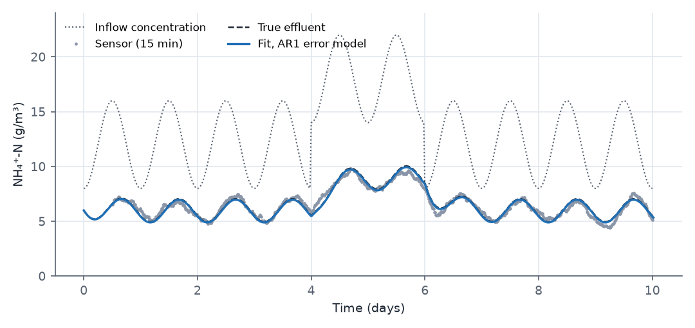
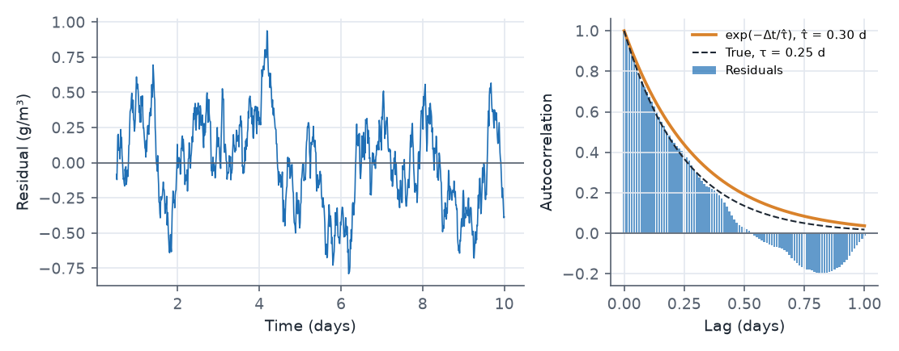
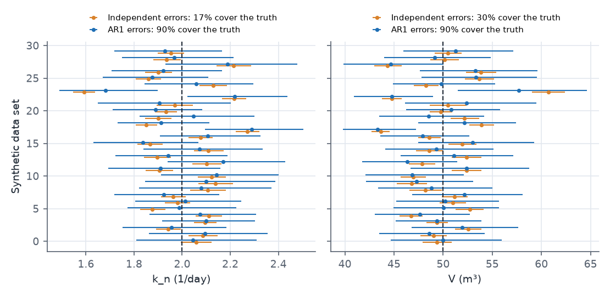
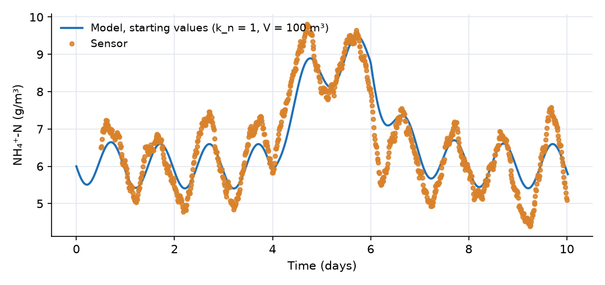

What this model represents
Online sensors record water quality every few minutes. A model fitted to such a record has residuals that are strongly serially correlated: an error in timing, a sensor drift or a missing process keeps the residual on the same side of zero for hours. The standard least-squares likelihood treats each of the n residuals as independent information. With a correlated record, the effective number of independent residuals is much smaller than n, so the reported parameter uncertainty is too small, often by a large factor, and confidence intervals routinely miss the true values.
OpenHydroQual 2.1.1 adds an optional continuous-time first-order autoregressive (AR1) error model to every Observation. This example shows what it does on a case where the answer is known. A small treatment basin removes ammonium by nitrification; its volume and rate constant are calibrated from a synthetic 15-minute effluent record whose errors were generated with a known AR1 process. The same data are fitted twice with Levenberg-Marquardt (LM): once assuming independent errors (basin_iid.ohq) and once with the AR1 model (basin_ar1.ohq). A study of 30 independent noise realizations then checks how often each method's 95% intervals contain the truth.
How it works
The basin
The basin is a Reactor block with a constant inflow Q = 100 m³/day and a Fixed flow link that removes 100 m³/day, so its volume V stays at its initial value. Ammonium enters at the time-varying concentration C_in(t) and is removed by the reaction Nitrification (rate k_n·C, coefficient −1):
V·dC/dt = Q·(C_in(t) − C) − V·k_n·C
At steady state C = C_in/(1 + k_n·V/Q), so the effluent level fixes the product k_n·V. The diurnal swing in C_in passes through the basin with an amplitude reduced by roughly (Q/V)/√((Q/V + k_n)² + ω²), with ω = 2π per day, which depends on Q/V + k_n. Together the level and the swing identify k_n and V, but the two remain strongly negatively correlated. The 2-day step in C_in adds information on the response time. V is calibrated through setasparameter on the block's Storage, which sets the initial (and here constant) volume.
The error models
For an observation with residuals eᵢ = oᵢ − mᵢ at times tᵢ, the default (error_autocorrelation = none) likelihood is
−ln L = n·ln σ + Σ eᵢ²/(2σ²)
With error_autocorrelation = AR1 the residuals are modelled as a continuous-time AR1 (Ornstein-Uhlenbeck) process with correlation time τ (error_correlation_time, days):
eᵢ = φᵢ·eᵢ₋₁ + ηᵢ, φᵢ = exp(−(tᵢ − tᵢ₋₁)/τ), ηᵢ ~ N(0, σ²(1 − φᵢ²)), e₁ ~ N(0, σ²)
so σ (error_standard_deviation) keeps its meaning as the standard deviation of a single residual, and the correlation between two residuals Δt apart is exp(−Δt/τ). Because φᵢ is computed from the actual spacing, irregular sampling and gaps are handled: across a gap much longer than τ, φ → 0 and the error process restarts. The exact negative log-likelihood is
−ln L = n·ln σ + Σᵢ≥₂ ln √(1 − φᵢ²) + [u₁² + Σᵢ≥₂ uᵢ²]/(2σ²), u₁ = e₁, uᵢ = (eᵢ − φᵢ·eᵢ₋₁)/√(1 − φᵢ²)
that is, the independent-error likelihood applied to the whitened residuals uᵢ, plus a log-determinant term that depends only on τ and the observation times. φ is capped at 0.9999, and τ = 0 reproduces the independent model exactly. The AR1 model is implemented for the Least Squared comparison and should not be combined with likelihood_scale > 1, which corrects for the same autocorrelation in a cruder way. The same likelihood is used by the genetic algorithm, MCMC and LM.
What LM does with σ and τ
Here σ and τ are both calibrated parameters (p_sigma, p_tau), but LM does not search for them with the kinetic parameters. After every accepted step it sets τ by a golden-section search over its range (in log10 space), evaluating the likelihood from the stored raw residuals with no model run, and at each trial τ it sets σ to its best value, the root-mean-square of the whitened residuals. The Jacobian is formed from the whitened residuals divided by σ, so the covariance (JᵀJ)⁻¹ that LM reports for k_n and V is the generalized least-squares covariance for correlated errors. It is conditional on the profiled σ and τ.
Running
OHQ-LM basin_ar1.ohq ./ --threads 2
OHQ-LM basin_iid.ohq ./ --threads 2
OHQ-LM basin_ar1.ohq ./ --verify-residuals
Relative file names are resolved against the output folder given on the command line, so run LM with the model's own folder as the output folder (./), or copy the input files there. --verify-residuals reports the AR1 log-determinant term separately and confirms that ½‖r‖² + n ln σ + Σ ln √(1 − φᵢ²) equals the misfit. In the interface, press Levenberg-Marquardt calibration. The AR1 model needs OpenHydroQual 2.1.1 or later: an older build ignores error_autocorrelation and fits independent errors. The results below were produced with OHQ-LM built from the 2.1.1 sources, two threads; each fit takes 19 to 37 model runs and a few seconds.
What to look for in the results

Both error models fit the curve almost identically; the difference is in what they say about its uncertainty.
| Independent errors | AR1 errors | Truth | |
|---|---|---|---|
| k_n (1/day), 95% interval | 2.057 (1.995 to 2.122) | 2.045 (1.810 to 2.310) | 2.0 |
| V (m³), 95% interval | 49.4 (47.9 to 50.9) | 50.0 (44.7 to 56.0) | 50 |
| correlation of k_n and V | −0.98 | −0.93 | |
| σ (g/m³), profiled | 0.318 | 0.317 | 0.3 |
| τ (days), profiled | (not modelled) | 0.30 | 0.25 |
| −ln L at the optimum | −588.3 | −1827.6 |
- Same fit, very different intervals. The independent model's interval for k_n is ±3%, and only just contains the true value; for many of the replicate data sets below it does not. The AR1 interval is about four times wider. The point estimates hardly move, because the curve is the same; what changes is how much information 913 correlated points are credited with.
- The likelihood strongly prefers AR1. −ln L falls by 1239 when the single extra parameter τ is added, an overwhelming improvement for one parameter. The estimated τ = 0.30 day is close to the 0.25 day used to make the noise.

- Reading the residuals. Consecutive residuals 15 minutes apart have a correlation of 0.97, and the sample autocorrelation falls to 1/e at a lag of about 0.27 day, as the fitted exp(−Δt/τ̂) predicts. Over long lags the sample autocorrelation of a finite record dips below zero; that is a known bias of the estimator, not a property of the errors. A plot like this, made from the residuals of an independent-error fit, is the quickest way to decide whether the AR1 model is needed.

| Over 30 data sets | Independent errors | AR1 errors |
|---|---|---|
| intervals containing the true k_n | 5 of 30 (17%) | 27 of 30 (90%) |
| intervals containing the true V | 9 of 30 (30%) | 27 of 30 (90%) |
| reported SE of log10 k_n (mean) | 0.006 | 0.025 |
| actual spread of log10 k_n (SD over data sets) | 0.032 | 0.028 |
| mean τ̂ (days) | 0.245 (truth 0.25) |
- Honest uncertainty. The actual scatter of the estimates from data set to data set is about the same for both methods (both are unbiased on average: mean k_n 2.005 and 2.015). But the independent model reports a standard error five times smaller than that scatter, so its nominal 95% intervals cover the truth only 17 to 30% of the time. The AR1 standard error matches the scatter, and its intervals cover the truth in 27 of 30 cases, consistent with 95% given only 30 trials.
- Why the factor is so large. With samples 15 minutes apart and τ = 0.25 day, φ = 0.959 between neighbours. For a pure AR1 process the effective number of independent values is about n·(1 − φ)/(1 + φ) ≈ 19, not 913.
Assumptions and limitations
- The noise was generated with exactly the error model that is fitted, which is the best case for AR1. Real residuals can have several time scales or heavy tails; check the residual autocorrelation after fitting.
- The AR1 process is stationary with constant σ. Errors that grow with the concentration need a transformation (for example
error_structure = log-normal, for which the AR1 model applies to the log residuals). - LM's covariance for k_n and V is conditional on the profiled σ and τ and assumes the likelihood is close to quadratic near the optimum. For a full posterior including σ and τ, run MCMC on the same file with p_sigma and p_tau as sampled parameters.
- These results were produced with LM only. The genetic algorithm and MCMC evaluate the same AR1 likelihood, but were not run for this example.
- The settings are kept small (one record of 10 days, 30 replicates). The replicate study is not part of the download; it reruns the two files on new noise realizations.
Model diagram
Hover a block or link to see its name and type. Arrows show the positive flow direction.
Components
Click a component to see every property set in the model file, with units and meaning.
Blocks 2
Storage compartments: each holds water (and dissolved or particulate mass) and has a state that evolves in time.
BasinReactor · mass_transferA completely mixed treatment basin (CSTR) receiving 100 m³/day. Its volume V is a calibrated parameter (p_V, truth 50 m³, hydraulic residence time 0.5 day). It starts with 6 g/m³ of ammonium.
Reactor: Reactor
| Property | Value | Unit | Meaning |
|---|---|---|---|
| Ammonium: Concentration | 6 | g/m3 | Computed as mass/(Storage+0.00001) |
| Ammonium: Time Variable Inflow concentration | inflow_concentration.txt | g/m^3 | |
| Initial Storage | 100 | m3 | |
| Bottom elevation | 0 | m | |
| Constant Inflow | 100 | m3/day |
Receiving_WaterReactor · mass_transferA large receiving storage (10⁵ m³ Reactor block) that collects the effluent. Nothing flows back.
Reactor: Reactor
| Property | Value | Unit | Meaning |
|---|---|---|---|
| Ammonium: Concentration | 0 | g/m3 | Computed as mass/(Storage+0.00001) |
| Initial Storage | 100000 | m3 | |
| Bottom elevation | 0 | m | |
| Constant Inflow | 0 | m3/day |
Links 1
Connections that move water (and the mass it carries) between blocks.
OutletFixed flow · mass_transferConstant effluent flow of 100 m³/day from Basin to Receiving_Water, equal to the inflow, so the basin volume stays constant.
Fixed flow: Fixed flow
| Property | Value | Unit | Meaning |
|---|---|---|---|
| Flow rate | 100 | m3/day |
Constituents 1
Substances or particles carried by the water.
AmmoniumConstituentAmmonium nitrogen (g/m³ as N), entering with the inflow and removed by first-order nitrification.
Constituent: Chemical constituent
| Property | Value | Unit | Meaning |
|---|---|---|---|
| Concentration | 0 | g/m3 | Computed as mass/(Storage+0.00001) |
| Constant Inflow concentration | 0 | g/m3 | |
| Diffusion Coefficient | 0 | m2/s | |
| Dispersivity | 0 | m | |
| Stoichiometric Constant | 0 |
Reaction parameters 1
Named coefficients used in reaction rate expressions.
k_nReactionParameterFirst-order nitrification rate constant (1/day). Its value is set by the calibrated parameter p_k_n.
ReactionParameter: Reaction Parameter
| Property | Value | Unit | Meaning |
|---|---|---|---|
| Arrhenius temperature correction factor | 1 | ||
| Value | 1 | ||
| Reference Temperature | 20 |
Reactions 1
Transformations among constituents, each with a stoichiometry and a rate expression.
NitrificationReactionFirst-order loss of ammonium, rate k_n·NH₄.
Reaction: Chemical reaction
(k_n*Ammonium)| Constituent | Stoichiometric coefficient |
|---|---|
| Ammonium | -1 |
Model parameters 4
Quantities flagged for estimation, with their search ranges or priors.
p_k_nParameterNitrification rate constant (1/day), searched in log10 between 0.1 and 20. Start 1; truth 2.
Parameter: Parameter
| Property | Value | Unit | Meaning |
|---|---|---|---|
| Lower Limit | 0.1 | ||
| Upper Limit | 20 | ||
| Value | 1 | ||
| Prior distribution | log-normal |
p_VParameterBasin volume (m³), bound to the block's Storage, searched in log10 between 5 and 500. Start 100; truth 50.
Parameter: Parameter
| Property | Value | Unit | Meaning |
|---|---|---|---|
| Lower Limit | 5 | ||
| Upper Limit | 500 | ||
| Value | 100 | ||
| Prior distribution | log-normal |
p_sigmaParameterMarginal standard deviation of the errors (g/m³). Profiled analytically by LM at every iteration.
Parameter: Parameter
| Property | Value | Unit | Meaning |
|---|---|---|---|
| Lower Limit | 0.001 | ||
| Upper Limit | 10 | ||
| Value | 0.5 | ||
| Prior distribution | log-normal |
p_tauParameterAR1 correlation time of the errors (days). Profiled by LM with a golden-section search over 0.001 to 5 days.
Parameter: Parameter
| Property | Value | Unit | Meaning |
|---|---|---|---|
| Lower Limit | 0.001 | ||
| Upper Limit | 5 | ||
| Value | 0.1 | ||
| Prior distribution | log-normal |
Observations 1
Model outputs that are recorded and, when data are supplied, compared with measurements.
Effluent_NH4ObservationObservation of the basin (effluent) ammonium concentration, compared with sensor_effluent_NH4.csv. Normal errors with the AR1 error model: error_autocorrelation = AR1, error_correlation_time driven by p_tau, error_standard_deviation driven by p_sigma.
Observation: Observation
| Property | Value | Unit | Meaning |
|---|---|---|---|
| Expression | Ammonium:concentration | Expression evaluated on the chosen object at each output time step. Typically a single state variable (e.g. 'Storage') or a derived quantity (e.g. 'Storage/Area'). The result becomes the modeled value compared against observed data. | |
| Error probability distribution | normal | Distribution assumed for the residual between modeled and observed values. 'normal' compares values directly; 'log-normal' compares the logs (suitable for strictly positive quantities spanning multiple orders of magnitude, e.g. concentrations or flows). | |
| Error standard deviation | 0.5 | Standard deviation of the residual under the chosen error structure. For 'normal' errors, units match the observed quantity; for 'log-normal' errors, this is the standard deviation of log-residuals. May be set per-observation or pushed in at runtime from a Truth Twin metadata sidecar. | |
| Comparison Method | Least Squared | How modeled and observed series are compared. 'Least Squared' uses standard sum of squared residuals (negative log-likelihood for normal/log-normal errors). 'Similarity' compares autocorrelation structure and value distribution (Kolmogorov-Smirnov), useful when point-by-point matching is not meaningful. 'Weighted Least Squared' applies a temporal kernel that downweights older observations, suited for streaming data assimilation where recent measurements should dominate. 'EMC' compares event mean concentrations: for each event window in the EMC events file the modeled expression is weighted by the EMC weighting expression (e.g. flow) and averaged over the event, then compared with the observed value time-stamped within that window. | |
| Error autocorrelation model | AR1 | Serial correlation of the residuals (in the space set by the error structure, i.e. of the log residuals for 'log-normal'). 'none' (default): independent errors, the previous behaviour. 'AR1': continuous-time first-order autoregressive errors (Ornstein-Uhlenbeck), e_i = phi_i*e_(i-1) + eta_i with phi_i = exp(-(t_i - t_(i-1))/error_correlation_time) and Var(eta_i) = sigma^2*(1 - phi_i^2), so irregularly spaced observations and gaps are handled consistently; the likelihood is evaluated exactly on the whitened residuals. error_standard_deviation is then the marginal (stationary) standard deviation. Used by the 'Least Squared' comparison only. | |
| Error correlation time | 0.1 | day | Correlation time tau of the AR1 error model: the correlation between two residuals dt apart is exp(-dt/tau). 0 means independent errors. Can be fixed or calibrated like error_standard_deviation. Used only when error_autocorrelation is 'AR1'. Do not combine with likelihood_scale > 1, which corrects for the same autocorrelation in a cruder way. |
| Observed data time series | sensor_effluent_NH4.csv | Measured time series to compare the modeled output against. Used by all comparison methods. May be loaded from a file or pushed in at runtime by an external assimilation driver. |
Input files
inflow_concentration.txt | Ammonium concentration of the inflow (g/m³) every 30 minutes over 10 days: 12 g/m³ with a diurnal swing of ±4 g/m³, and an extra 6 g/m³ between day 4 and day 6. Two columns (days, g/m³), no header. |
sensor_effluent_NH4.csv | Synthetic effluent sensor record (g/m³), every 15 minutes from day 0.5 to day 10 (913 values). Made by running the model at k_n = 2 1/day and V = 50 m³ and adding continuous-time AR1 noise with σ = 0.3 g/m³ and τ = 0.25 day (random seed 1000). |
basin_iid.ohq | The same model and data with error_autocorrelation = none (independent errors) and no p_tau parameter. Run it with OHQ-LM to reproduce the comparison. |
Simulation settings
| Start time | 0 |
| End time | 10 |
| Initial time step | 0.005 |
| Write interval (steps) | 100 |
| Newton-Raphson tolerance | 1e-08 |
Results
Produced by running the downloaded model unchanged.
